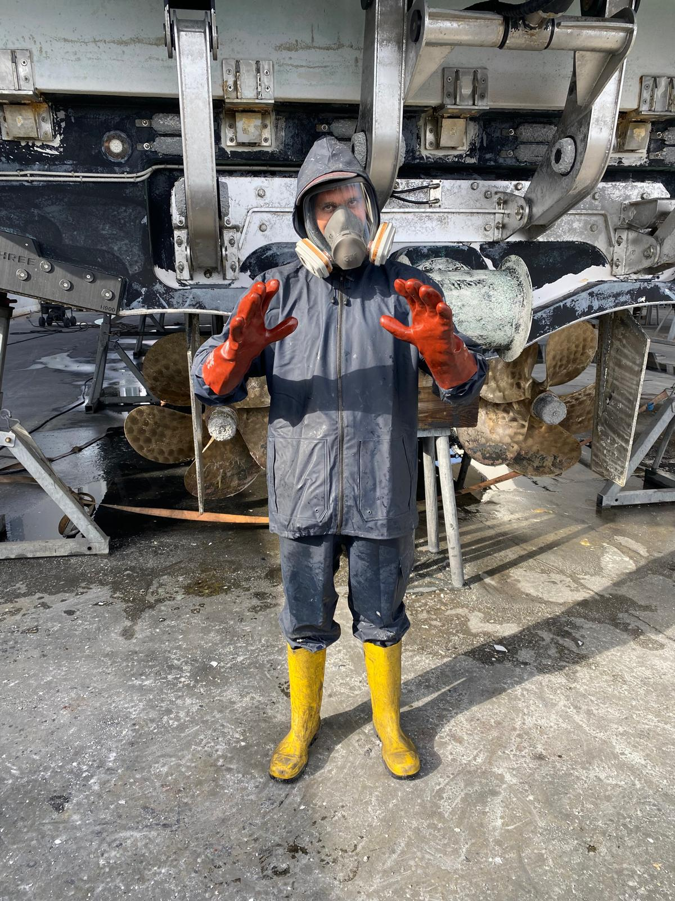
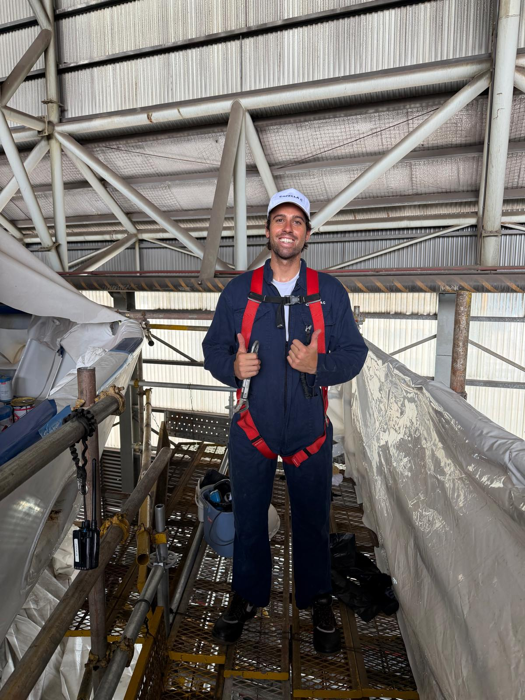
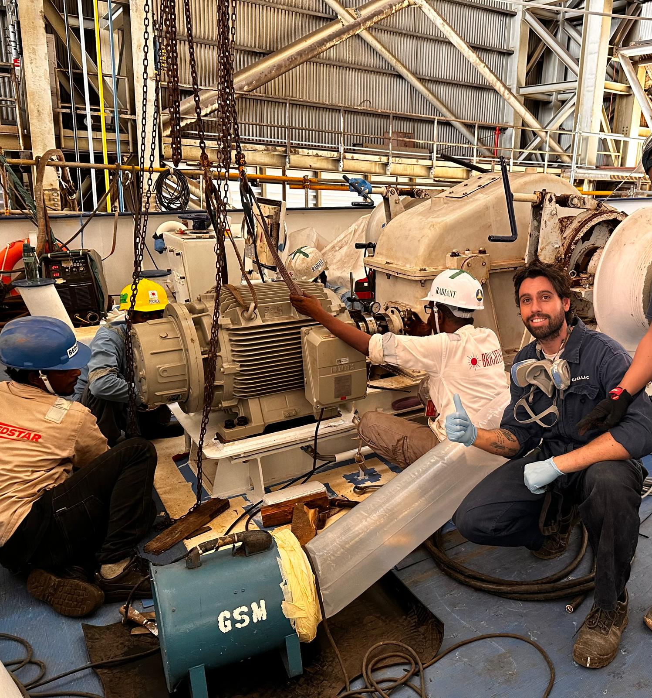
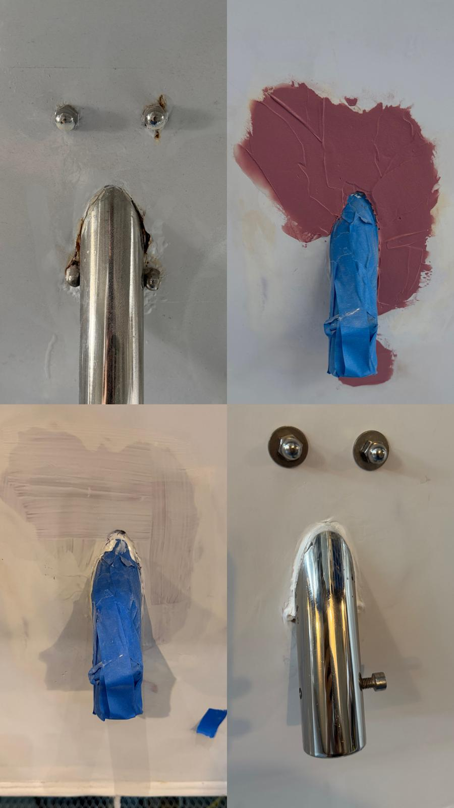
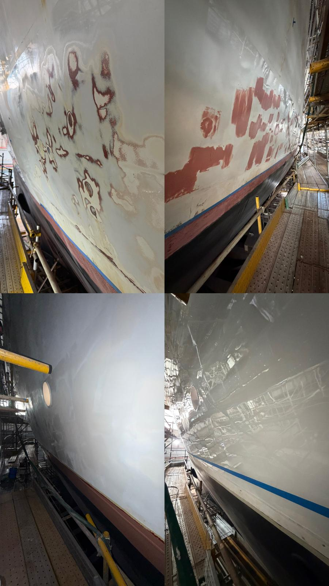
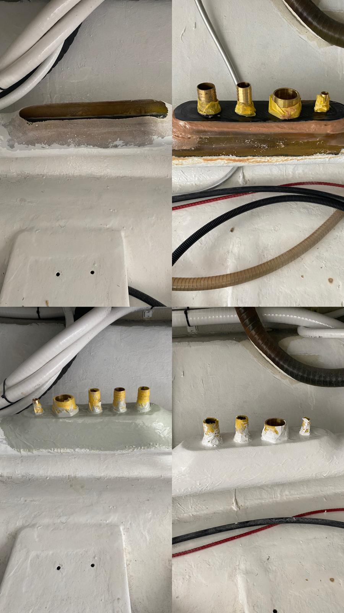

High-end detailing, fiberglass repairs and custom marine work designed for durability, performance and a flawless finish. Built from real shipyard experience.

Pre-Season 2026/27
Summer is coming. Get your boat cleaned, restored and ready for the season with professional marine detailing, restoration and maintenance services.
Professional exterior washing, detailing, polishing and protection to bring your boat back to its best.
Oxidation removal, compound, polish and gelcoat restoration for a clean and glossy finish.
Teak cleaning and restoration, stainless steel polishing and finishing for a premium look.
Fibreglass and gelcoat repairs, surface restoration and general marine maintenance.
General maintenance, installations and practical support to get your vessel ready for the season.
Have several jobs to take care of? Get in touch and we can organise a tailored pre-season service for your boat.
Pre-season bookings are now open.
Book a Pre-Season ServiceWith hands-on experience across sailing boats, superyachts and shipyard environments, I bring practical marine knowledge and attention to detail to every project. From maintenance and restoration to custom marine work, my experience has been built directly on the water and in professional shipyard environments.
My background covers a wide range of marine environments, from sailing boats and private vessels to superyachts and professional shipyards. Working directly on vessels has given me a strong understanding of marine maintenance, detailing, repairs, finishing and practical problem solving.
This hands-on experience allows me to approach every job with a practical understanding of how materials, surfaces and marine environments behave over time.
A glimpse of the work, projects and environments behind Alex Yachting Solutions.



Full yacht detailing including wash, compound, polish, gelcoat restoration and long-term ceramic protection systems.
Structural repairs, crack fixing, osmosis treatment and full fiberglass rebuilds with professional finishing.
Custom marine builds including cabins, seating, storage solutions and wood/resin fabrication.
Refit support, accessory installation, upgrades and on-board maintenance services.
Professional teak cleaning, restoration and sealing to preserve and protect exterior decks.
Stainless steel polishing, inox restoration and high-end finishing for a premium yacht look.
Professional rust treatment and corrosion control for marine metal surfaces and components.
We work exclusively with industry-leading marine systems:
Awlgrip • International • 3M
Using only top-quality coatings and materials ensures long-lasting protection, durability and a flawless high-end finish in all marine conditions.





Available for detailing, repairs and custom marine work. Fast response for urgent jobs.
Contact on WhatsApp